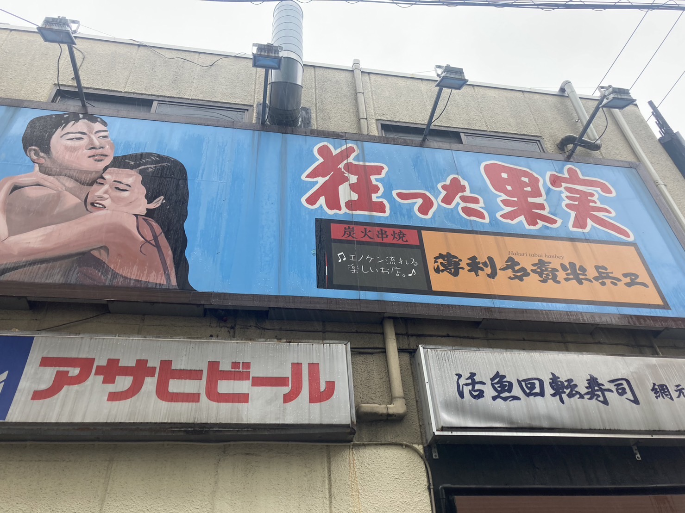
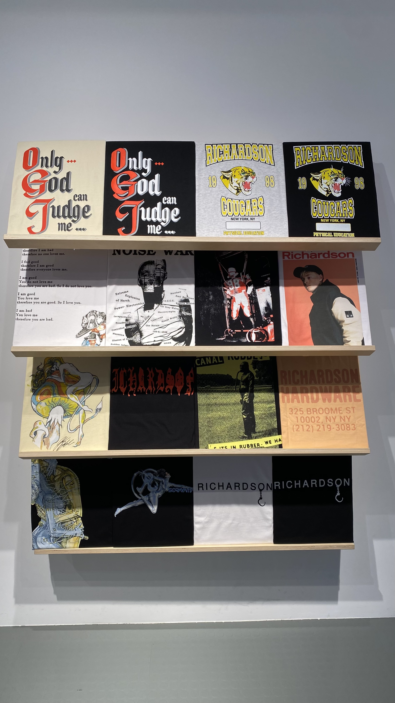

横浜駅西口にある焼き鳥屋(2023/10/9) 撮影者 げん
この写真はxbpの友達のげんくんと横浜駅西口の飲屋街を歩いている時に見つけた焼き鳥屋の看板です。
一見、焼き鳥屋に見えない情熱的な絵と『狂った果実』のインパクトのあるキャチフレーズが印象的な看板です。
一見、焼き鳥屋に見えない情熱的な絵と『狂った果実』のインパクトのあるキャチフレーズが印象的な看板です。
MONICHIKI HOUSE(2022/7/17) 金尾
この写真は大学見学で東京に遊びに来た時に大好きなラッパーのMonyHorseさんが経営しているハンバーガー屋さんに行って
撮った写真です。店の中の壁に書いてあったモニチキハウスのマークがカッコよくて写真を撮りました。
撮った写真です。店の中の壁に書いてあったモニチキハウスのマークがカッコよくて写真を撮りました。

Richardson 原宿店(2022/7/18) 金尾
この写真はrichardsonという僕の大好きな服のブランドの店で撮った写真です。今は日本から店舗が撤退していますが
撤退する前に行った時の写真で、この時初めて行きました。店内はとてもオシャレでこの写真は日本から撤退する前に
行った記念として店の一部の展示品を撮ったものです。

撤退する前に行った時の写真で、この時初めて行きました。店内はとてもオシャレでこの写真は日本から撤退する前に
行った記念として店の一部の展示品を撮ったものです。